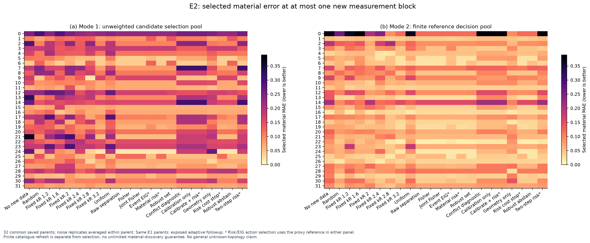
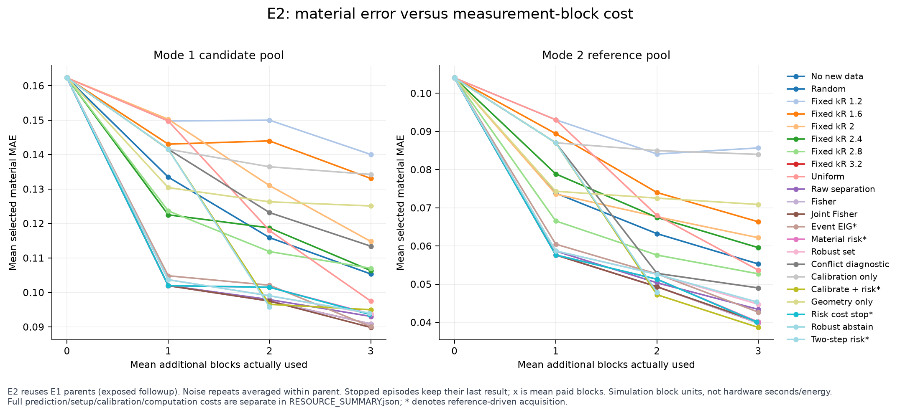
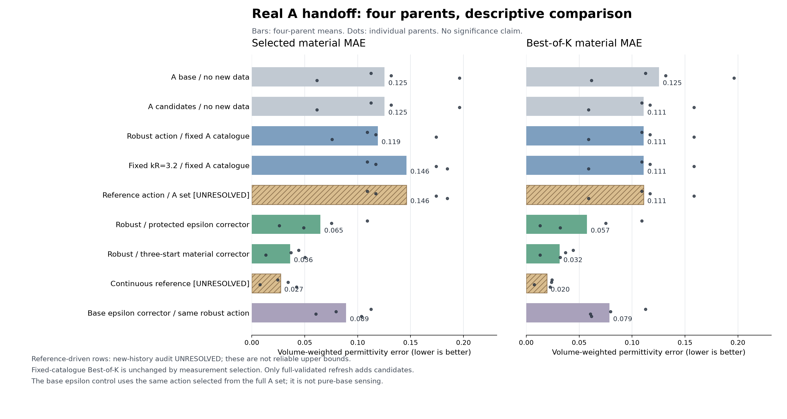

多个材料世界，需要怎样的新测量？
Research B · 补偿感知主动Maxwell测量 · 2026-10-15
新增测量在径向矢量Mie台架中有用，但32-parent比较没有证实复杂策略优于固定3.2。真实A四例加入独立corrector后明显改善材料MAE；不能把四例或未收敛参考概率当作普遍优势。
3284 / 4096新增物理attempt
32 + 4B parent + 真实A交接
0GPU / 硬件测量
八个直接回答
- 小中心孔与实心可沿合法介电常数和gain补偿保持接近；固定625池本身也遗漏大量接近truth的材料。三步后多数有限兼容集合仍跨结构family。
- 在本台架中，高频尤其3.2通常比repeat1.6、2.4或单独校准更有材料选择价值；这不是任意目标/硬件的频率推荐。校准能通过限制gain间接提供材料信息。
- 32-parent比较没有证实robust、材料风险或EIG胜过强固定3.2。普通Fisher首步与固定3.2重合。四个真实A交接案例中robust比固定3.2好，但差异主要来自一个parent，不能升级为总体优势。
- 固定池三次3.2使Selected-MAE从0.162279降至0.090885；真实A四例加入连续先验多起点corrector后从0.125480降至0.036170。这两组不是同一人群；后者混合了新信息与额外重建计算，不能单独归因于选测。
- full-Mie端点支持部分跨频gain冲突，但很多对照冲突很小。不能把全部频谱收益都归给gain共享；原raw-conflict指标倾向校准且材料结果较差。
- 删去中心孔family后29/30相关noise episodes未报警。低残差或唯一剩余候选都不能保证没有漏世界。
- 不为消耗余额继续campaign；对仍难分的小孔保留歧义。当前优先改善候选支持，并保留简单固定策略作强对照。
- 可复算的跨频补偿见证、候选缺漏失败机制和实际A→B→corrector闭环是研究素材。复杂策略收益、一般非同心3D、真实仪器优势与强原创性尚未建立。
相同测量成本的真实材料结果
精确体积加权Re/Im ε分量L1；E1一新增block，E2最多三block，同32parent的暴露后续。有限参考列†未完成新history积分收敛。
| 策略 | E1固定池MAE | E2固定池MAE | E2有限参考MAE† | E2 blocks |
|---|---|---|---|---|
| none | 0.162279 | 0.162279 | 0.104046 | 0.000000 |
| fixed_1.2 | 0.149763 | 0.140054 | 0.085696 | 3.000000 |
| fixed_1.6 | 0.143048 | 0.133089 | 0.066354 | 3.000000 |
| fixed_2 | 0.150269 | 0.114810 | 0.062181 | 3.000000 |
| fixed_2.4 | 0.122534 | 0.106367 | 0.059581 | 3.000000 |
| fixed_2.8 | 0.123681 | 0.107033 | 0.052725 | 3.000000 |
| fixed_3.2 | 0.101982 | 0.090885 | 0.039812 | 3.000000 |
| random | 0.133483 | 0.105370 | 0.055309 | 3.000000 |
| uniform | 0.149763 | 0.097503 | 0.053684 | 3.000000 |
| raw | 0.102027 | 0.093068 | 0.043414 | 3.000000 |
| classical_Fisher | 0.101982 | 0.090885 | 0.039812 | 3.000000 |
| joint_projected_Fisher | 0.101982 | 0.089865 | 0.040140 | 3.000000 |
| event_EIG | 0.104847 | 0.090107 | 0.042696 | 3.000000 |
| expected_material_risk | 0.101982 | 0.093775 | 0.040103 | 3.000000 |
| robust | 0.103714 | 0.093842 | 0.044747 | 3.000000 |
| conflict_diagnostic | 0.141574 | 0.113446 | 0.049028 | 3.000000 |
| calibration_only | 0.141574 | 0.134254 | 0.084007 | 3.000000 |
| calibrate_then_risk | 0.141574 | 0.094999 | 0.038684 | 3.000000 |
| geometry_only | 0.130434 | 0.125114 | 0.070882 | 3.000000 |
| risk_cost_stop | 未运行 | 0.093687 | 0.040103 | 2.984375 |
| robust_abstain | 未运行 | 0.094046 | 0.045372 | 2.984375 |
| two_step_bundle | 未运行 | 0.095791 | 0.047853 | 2.000000 |
Fisher/risk选择与固定3.2首步重合。固定3.2是必须保留的强描述性baseline，不代表一般频率最优。


真实A候选：选择和发现必须分开
| 方法 | Selected-MAE | Best-of-K | Coverage≤.05 | 平均K |
|---|---|---|---|---|
| A_base_only_no_measurement | 0.125480 | 0.125480 | 0% | 1.00 |
| A_fixed_candidate_profile_no_measurement | 0.125480 | 0.110881 | 0% | 6.75 |
| A_robust_action_then_profile | 0.119000 | 0.110881 | 0% | 6.75 |
| A_fixed3.2_then_profile | 0.146238 | 0.110881 | 0% | 6.75 |
| A_reference_action_then_profile | 0.146238 | 0.110881 | 0% | 6.75 |
| A_robust_then_protected_eps_corrector | 0.064836 | 0.057371 | 50% | 11.75 |
| A_robust_then_independent_prior_multistart_corrector | 0.036170 | 0.031589 | 100% | 9.75 |
| declared_continuous_P2_reference_comparator | 0.027106 | 0.019557 | 100% | 96.00 |
| A_base_only_same_action_eps_corrector | 0.089090 | 0.078574 | 0% | 2.00 |
固定候选选测不改变Best-of-K；新增fullvalidated corrector端点才可改善。仅四parent，缺同容量无新测量corrector对照，材料误差下降不等于所有结构正确。参考comparator未完整history验证，不能当上界。
四例材料选择与候选覆盖

明确的负结果与数值边界
漏掉中心孔family时29/30相关noise episodes没有残差报警。三步后多数兼容集合仍跨结构family。独立adaptive审计14/16 history未达原积分准则；有限2048样本事件质量差可约0.187。因此不宣称完整posterior、全空间coverage、一般3D成功或复杂策略优势。
只读复用P2和A资产；失败、数值audit、truth响应统一计费；剩余812 attempts不为填满预算继续运行。
报告、代码与数据
代码、冻结配置、科学合同测试、逐parent统计、实际推荐与更新history均保留。数组、完整rankings和缓存打包在同一B1仓库Release。发布状态不改变科学结论。